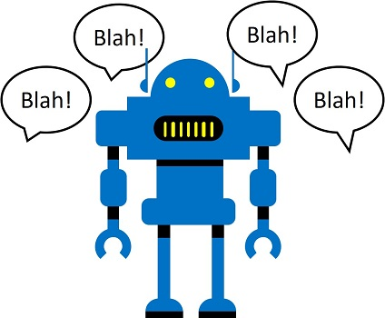

Cada vez mais, esperamos que os computadores possam usar a IA para entender comandos falados ou digitados em linguagem natural. Por exemplo, convém implementar um sistema de automação residencial que permita controlar dispositivos em sua casa usando comandos de voz como “Switch on the Light” ou “colocar o ventilador em” e peça a um dispositivo movido a IA entender o comando e tomar as medidas apropriadas.

Os serviços cognitivos do Microsoft incluem o serviço de compreensão do idioma, que permite definir intenções que são aplicados a entidades baseado em enunciados . Você pode usar um Entendimento da linguagem ou Serviços cognitivos recurso para publicar um aplicativo de entendimento de idiomas, mas você deve criar um separado Entendimento da linguagem recurso para autor o aplicativo.
- Em outra guia do navegador, abra o portal do Azure em https://portal.azure.com , assinando com sua conta da Microsoft.
- Clique**+ Crie um recurso**e procurar por Entendimento da linguagem .
- Na lista de serviços, clique Entendimento da linguagem .
- No Entendimento da linguagem lâmina, clique Criar .
- No Criar lâmina, insira os seguintes detalhes e clique Criar
- Criar opção : Ambos
- Nome : Um nome único para o seu serviço
- Subscrição : Selecione sua assinatura do Azure
- Grupo de recursos : Selecione um grupo de recursos existente ou crie um novo
- Localização de autor : Selecione qualquer local disponível
- Camada de preços de criação : F0
- Localização do tempo de execução : O mesmo que a localização da criação
- Tier de preços de tempo de execução : F0
- Aguarde os recursos a serem criados e observe que dois recursos de compreensão do idioma são provisionados; um para autoria e outro para previsão. Você pode visualizá -los navegando para o grupo de recursos onde os criou.
Para implementar o entendimento da linguagem natural com o entendimento da linguagem, você cria um aplicativo; e depois adicione entidades, intenções e enunciados para definir os comandos que você deseja que o aplicativo entenda:
- Em uma nova guia do navegador, abra o portal de compreensão do idioma em https://www.luis.ai , e entre no uso da conta da Microsoft associada à sua assinatura do Azure. Se for a primeira vez que você assina o portal de entendimento de idiomas, pode ser necessário conceder ao aplicativo algumas permissões para acessar os detalhes da sua conta. Em seguida, complete o Bem-vindo Etapas selecionando os recursos de criação de idiomas existentes que você acabou de criar em sua assinatura do Azure.
- Abra o Meus aplicativos Página e selecione sua assinatura e Recurso de Autoridade de Entendimento de Idiomas. Em seguida, crie um novo aplicativo para conversar com as seguintes configurações:
- Nome : Automação residencial
- Cultura : Inglês
- Descrição : Automação caseira simples
- Recurso de previsão : Seu recurso de previsão de compreensão do idioma
- Se um painel com dicas para criar um aplicativo de compreensão eficaz do idioma for exibido, feche -o.
Um entidade é algo com o qual seu modelo de idioma pode identificar e fazer algo. Nesse caso, seu aplicativo de compreensão do idioma será usado para controlar vários dispositivos no escritório, como luzes ou fãs; Então você criará um dispositivo Entidade que inclui uma lista dos tipos de dispositivo com os quais você deseja que o aplicativo funcione. Para cada tipo de dispositivo, você criará um sublista que identifica o nome do dispositivo (por exemplo luz ) e quaisquer sinônimos que possam ser usados para se referir a esse tipo de dispositivo (por exemplo lâmpada ).
- Na página de compreensão do idioma para o seu aplicativo, no painel à esquerda, clique Entidades . Em seguida, clique Criar e criar uma nova entidade chamada dispositivo , selecione o Lista digite e clique Criar .
- No Liste itens página, abaixo Valores normalizados , tipo luz , depois pressione Enter.
- Depois do luz o valor foi agregado, em Sinônimos , tipo lâmpada e pressione Enter.
- Adicione um segundo item de lista nomeado fã com o sinônimo E .
Um intenção É uma ação que você deseja executar em uma ou mais entidades - por exemplo, você pode querer ligar uma luz ou desligar um ventilador. Nesse caso, você definirá duas intenções: uma para ligar um dispositivo e outro para desligar um dispositivo. Para cada intenção, você especificará a amostra enunciados que indicam o tipo de linguagem usada para indicar a intenção.
- No painel à esquerda, clique Intenções . Em seguida, clique Criar , e adicione uma intenção com o nome switch_on e clique Feito .
- Sob o Exemplos indo e o Exemplo de entrada do usuário subtítulo, digite o enunciado* Ligue a luz*** e pressione Digitar**Para enviar esse enunciado à lista.
- No Ligue a luz enunciado, clique na palavra “luz” e atribua -a ao dispositivo entidade luz valor.
- Adicione um segundo enunciado ao switch_on intenção, com a frase***Ligue o ventilador***. Em seguida, atribua a palavra “fã” ao dispositivo entidade **Valor do ventilador **.
- No painel à esquerda, clique Intenções e clique Criar , para adicionar uma segunda intenção com o nome switch_off .
- No Enunciados página para o switch_off intenção, adicione o enunciado* Desligue a luz*** e atribuir a palavra “luz” ao dispositivo entidade luz**valor.
- Adicione um segundo enunciado ao switch_off intenção, com a frase***Desligue o ventilador***. Em seguida, conecte a palavra “fã” ao dispositivo entidade **Valor do ventilador **.
Agora você está pronto para usar os dados que você forneceu na forma de entidades, intenções e uterâncias para treinar o modelo de idioma para o seu aplicativo.
- No topo da página de compreensão do idioma para o seu aplicativo, clique Trem Para treinar o modelo de idioma
- Quando o modelo for treinado, clique Teste e use o painel de teste para ver a intenção prevista para as frases a seguir:
- Ligue a luz
- Desligue o ventilador
- Desligue a lâmpada
- Ligue o AC
- Feche o painel de teste.
Para usar seu modelo treinado em um aplicativo cliente, você deve publicá -lo como um ponto final no qual os aplicativos do cliente podem enviar novos enunciados; a partir da qual os intenções e os comuns serão previstos.
- No topo da página de compreensão do idioma para o seu aplicativo, clique Publicar . Em seguida, selecione Slot de produção e clique Feito .
- Depois que o modelo foi publicado, no topo da página de entendimento do idioma para o seu aplicativo, clique Gerenciar . Então no Informações do aplicativo guia, observe o ID do aplicativo para o seu aplicativo. Copie isso e cole -o no código abaixo para substituir Your_lu_app_id .
- No Recursos do Azure guia, observe o Chave primária e URL do terminal para o seu recurso de previsão. Copie -os e coloque -os no código abaixo, substituindo Your_lu_key e Your_lu_endpoint .
- Execute a célula abaixo clicando em seu Execute a célula (▷) botão (à esquerda da célula) e, quando solicitado, insira o texto Ligue a luz . O texto é interpretado pelo seu modelo de compreensão do idioma e uma imagem apropriada é exibida.
from python_code import luis
import matplotlib.pyplot as plt
from PIL import Image
import os
%matplotlib inline
try:
# Set up API configuration
luis_app_id = 'YOUR_LU_APP_ID'
luis_key = 'YOUR_LU_KEY'
luis_endpoint = 'YOUR_LU_ENDPOINT'
# prompt for a command
command = input('Please enter a command: \n')
# get the predicted intent and entity (code in python_code.home_auto.py)
action = luis.get_intent(luis_app_id, luis_key, luis_endpoint, command)
# display an appropriate image
img_name = action + '.jpg'
img = Image.open(os.path.join("data", "luis" ,img_name))
plt.axis('off')
plt. imshow(img)
except Exception as ex:
print(ex)
Reencontre a célula acima, tentando as seguintes frases:
- acender a luz
- Apoie a lâmpada
- Ligue o ventilador
- Ligue a luz
- Desligue a luz
- Desligue o ventilador
- Ligue o CA
Observação : Se você está curioso luis.py arquivo no python_code pasta.
Até agora, vimos como analisar o texto; Mas os sistemas cada vez mais AI permitem que os humanos se comuniquem com os serviços de software por meio do reconhecimento de fala. Para apoiar isso, o Discurso O serviço cognitivo fornece uma maneira simples de transcrever a linguagem falada para o texto.
Se você ainda não possui um, use as seguintes etapas para criar um Serviços cognitivos Recurso em sua assinatura do Azure:
- Em outra guia do navegador, abra o portal do Azure em https://portal.azure.com , assinando com sua conta da Microsoft.
- Clique no ＋ Crie um recurso Botão, pesquise Serviços cognitivos e criar um Serviços cognitivos Recurso com as seguintes configurações:
- Nome : Digite um nome único .
- Subscrição : Sua assinatura do Azure .
- Localização : Qualquer local disponível .
- Nível de preço : S0
- Grupo de recursos : Crie um grupo de recursos com um nome único .
- Aguarde a conclusão da implantação. Em seguida, vá para o seu recurso de serviços cognitivos e no Início rápido Página, observe as chaves e o terminal. Você precisará disso para se conectar ao seu recurso de serviços cognitivos a partir de aplicativos do cliente.
Para usar seu recurso de serviços cognitivos, os aplicativos do cliente precisam de seu terminal e chave de autenticação:
- No portal do Azure, no Chaves e terminal página para seu recurso de serviço cognitivo, copie o Chave1 para o seu recurso e cole -o no código abaixo, substituindo Your_cog_key .
- Copie o Endpoint para o seu recurso e colar -o no código abaixo, substituindo Your_cog_endpoint .
- Copie o Localização para o seu recurso e cole -o no código abaixo, substituindo Your_cog_region .
- Execute o código na célula abaixo.
cog_key = 'YOUR_COG_KEY'
cog_endpoint = 'YOUR_COG_ENDPOINT'
cog_region = 'YOUR_COG_REGION'
print('Ready to use cognitive services in {} using key {}'.format(cog_region, cog_key))
Para usar o serviço de fala em seu recurso de Serviços Cognitivos, você precisará instalar o SDK da fala de serviços cognitivos do Azure.
!pip install azure.cognitiveservices.speech
Agora execute a célula abaixo para transcrever o discurso de um arquivo de áudio e use -o como um comando para o seu aplicativo de compreensão do idioma.
from python_code import luis
import os
import IPython
import os
from azure.cognitiveservices.speech import SpeechConfig, SpeechRecognizer, AudioConfig
try:
# Get spoken command from audio file
file_name = 'light-on.wav'
audio_file = os.path.join('data', 'luis', file_name)
# Configure speech recognizer
speech_config = SpeechConfig(cog_key, cog_region)
audio_config = AudioConfig(filename=audio_file) # Use file instead of default (microphone)
speech_recognizer = SpeechRecognizer(speech_config, audio_config)
# Use a one-time, synchronous call to transcribe the speech
speech = speech_recognizer.recognize_once()
# Get the predicted intent and entity (code in python_code.home_auto.py)
action = luis.get_intent(luis_app_id, luis_key, luis_endpoint, speech.text)
# Get the appropriate image
img_name = action + '.jpg'
# Play audio and display image
IPython.display.display(IPython.display.Audio(audio_file, autoplay=True),
IPython.display.Image(data=os.path.join("data", "luis" ,img_name)))
except Exception as ex:
print(ex)
Tente modificar a célula acima para usar o Light-off.wav arquivo de áudio.
Saiba mais sobre o entendimento da linguagem em Documentos do serviço
Próxima Aula
Início
```